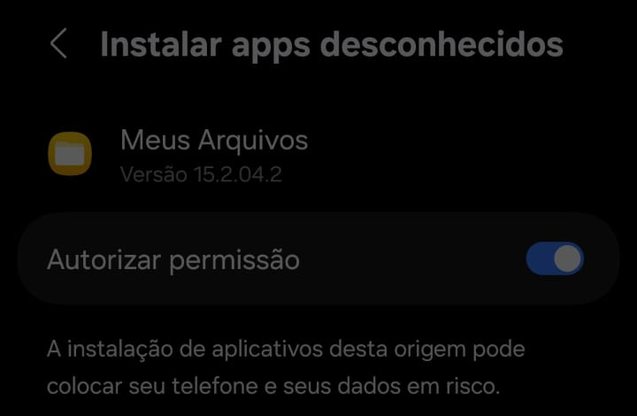
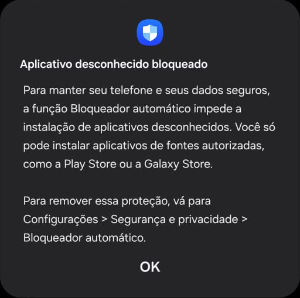
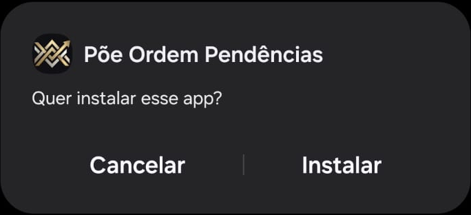
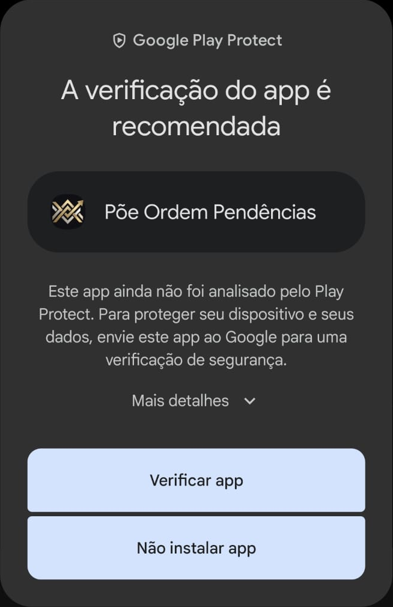
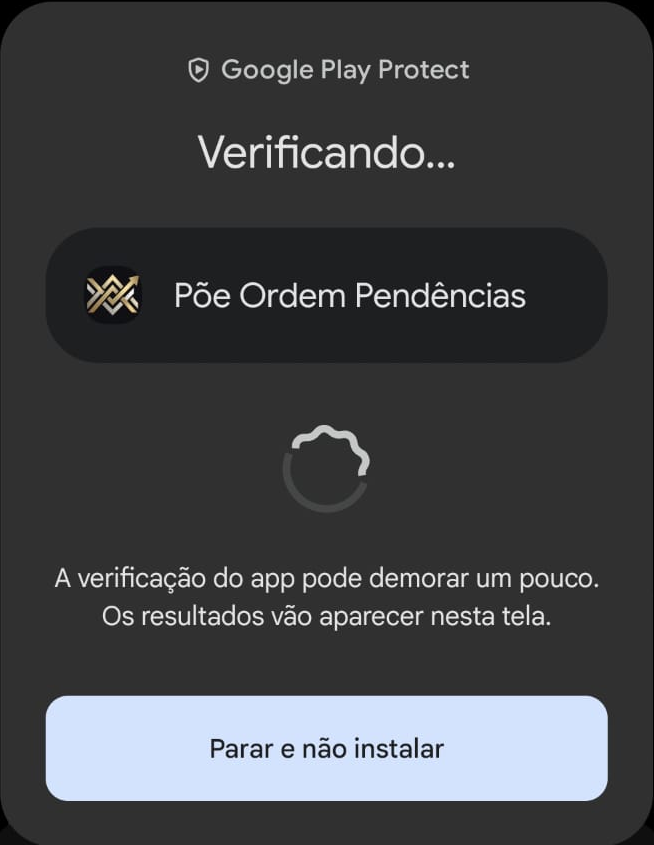
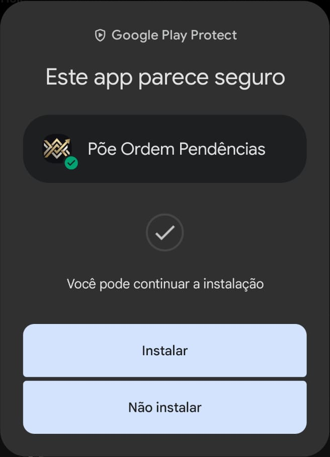
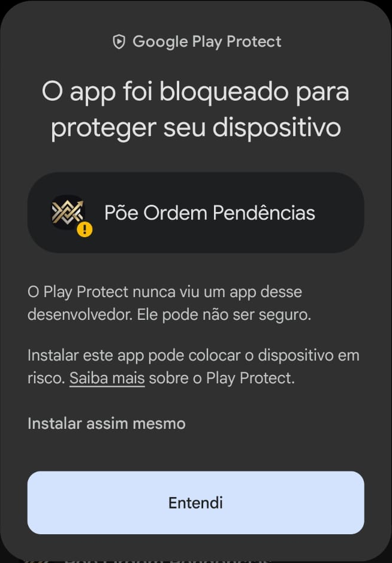
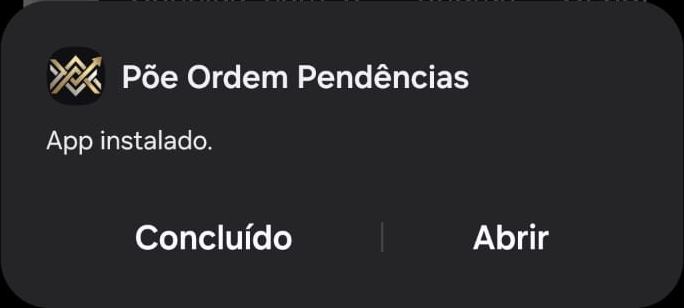

Como instalar o Põe Ordem Pendências
Leva uns 10 minutos. Você precisa de um celular Android 8.0 ou mais novo, com conta Google e internet ligada. O Android mostra alguns avisos porque o app não vem da Play Store. Siga os passos abaixo, na ordem.
1. Autorize o seu celular
- Abra o link que eu mandei pelo WhatsApp, no celular onde o app vai ficar.
- Confirme que me conhece: na tela aparece o meu nome, Eliane Elisa Ferroni.
- O celular mostra um código. Me mande esse código pelo WhatsApp.
- Espere eu avisar que o celular foi autorizado. O link vale 7 dias.
2. Abra o arquivo do app
Toque no arquivo PoeOrdem-Pendencias que eu mandei, dentro da nossa conversa no WhatsApp.
3. Libere a instalação
Se aparecer "Para sua segurança, o smartphone não tem permissão para instalar apps desconhecidos dessa fonte", toque em Configurações. Ligue Autorizar permissão e volte. O nome do app no alto pode ser WhatsApp.

Só em Samsung novo: se aparecer "Aplicativo desconhecido bloqueado", toque em OK. Vá em Configurações, Segurança e privacidade, Bloqueador automático, e desligue. Volte ao WhatsApp e toque no arquivo de novo.

4. Instale
Em "Quer instalar esse app?", toque em Instalar.

5. Avisos do Google Play Protect
Pode aparecer um destes avisos. É normal para app que não vem da Play Store.
Se aparecer "A verificação do app é recomendada", toque em Verificar app.

Espere a verificação terminar.

Em "Este app parece seguro", toque em Instalar.

Se aparecer "O app foi bloqueado para proteger seu dispositivo", toque em Mais detalhes e depois em Instalar assim mesmo. Não toque em Entendi: ele cancela a instalação.

6. Abra o app
Em "App instalado", toque em Abrir.

7. Libere o alarme
Na primeira vez, o app mostra a tela Liberações do alarme: Notificações, Alarme na hora exata e Tela cheia. Toque em cada botão, ligue a chave do Põe Ordem Pendências na tela do Android e volte. Depois, toque em Continuar.
Se a tela Hoje mostrar "Alarme incompleto. Toque para liberar.", falta alguma liberação: toque no aviso.
8. Configurações
Toque na engrenagem, no alto da tela Hoje.
- Nome do negócio.
- Modelo da mensagem ao cliente. As palavras entre colchetes o app troca sozinho: [cliente], [o que é], [prazo] e [negócio].
- Rascunho no Gmail, se for usar: ligue e escolha a sua conta Google.
- Alarme: intervalo e hora para pendência sem hora, se quiser mudar. O padrão é 10 minutos e 8 horas.
- Toque em Salvar.
9. Widget na tela inicial
Segure o dedo num espaço vazio da tela inicial, escolha Widgets, procure Põe Ordem e ponha o widget na tela.
10. Cópia de segurança
Deixe o backup do Google ligado no celular. Assim, as pendências e os clientes voltam se o app for reinstalado ou se você trocar de celular.
Versão nova
Quando eu mandar um arquivo novo, toque nele e instale por cima, sem desinstalar. As pendências continuam. Em Samsung, se o Bloqueador automático estiver ligado de novo, desligue antes de instalar.